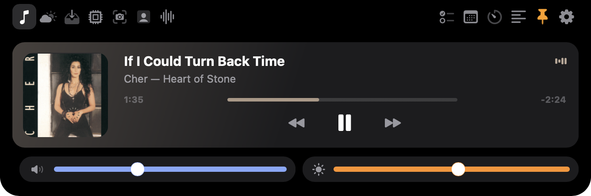

Put your notch to work.
Music, weather, timers, files, notes and your calendar, live in your MacBook's camera notch. One hover away.

Music, weather, timers, files, notes and your calendar, live in your MacBook's camera notch. One hover away.